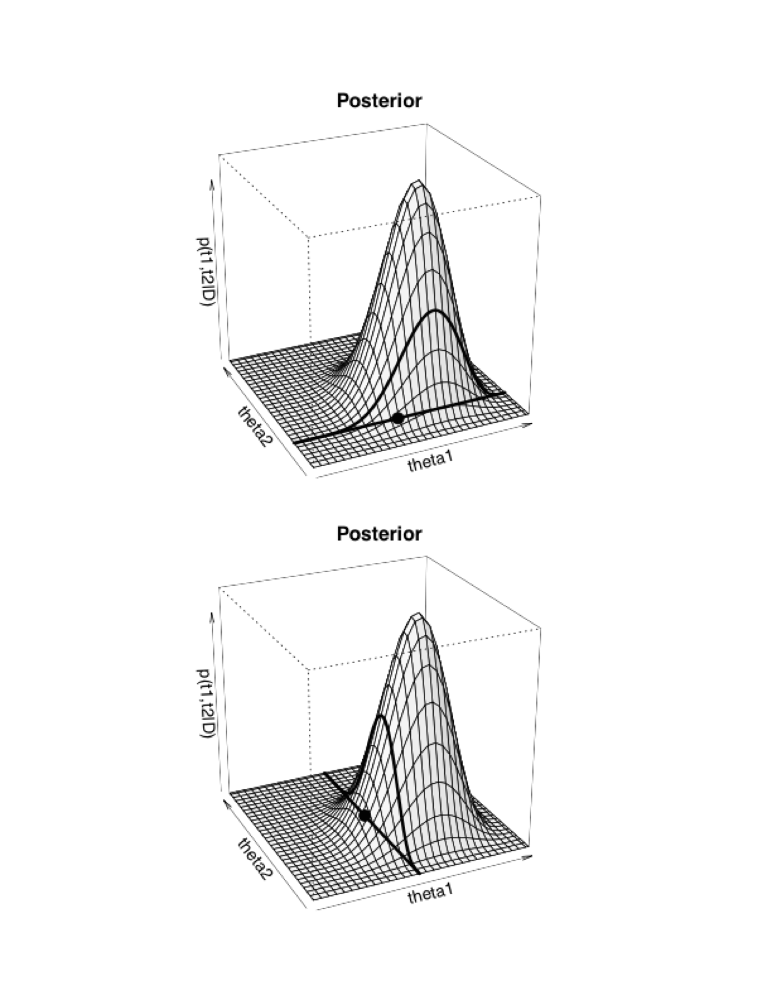
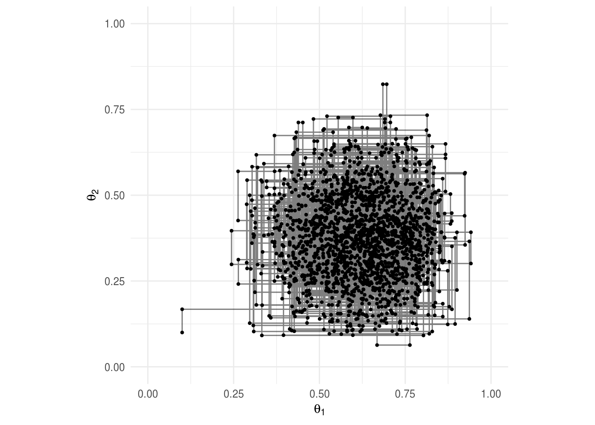
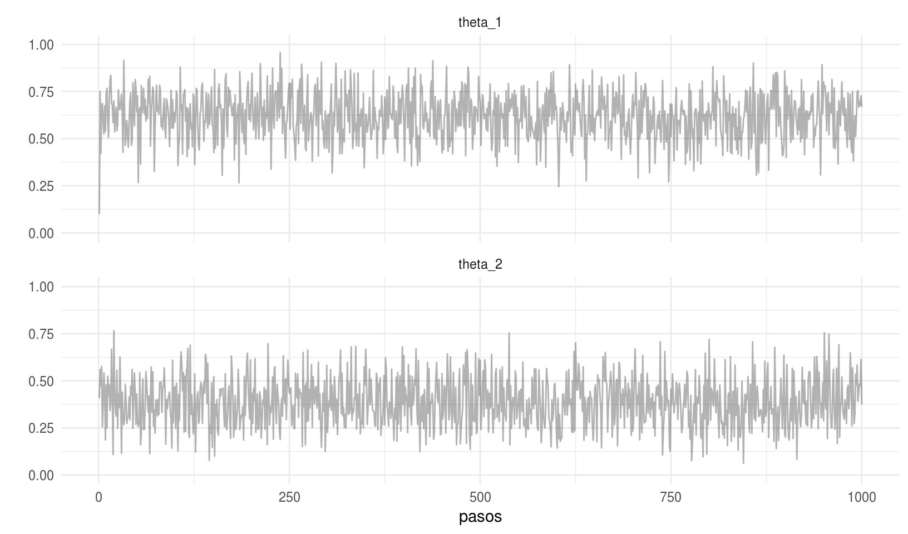
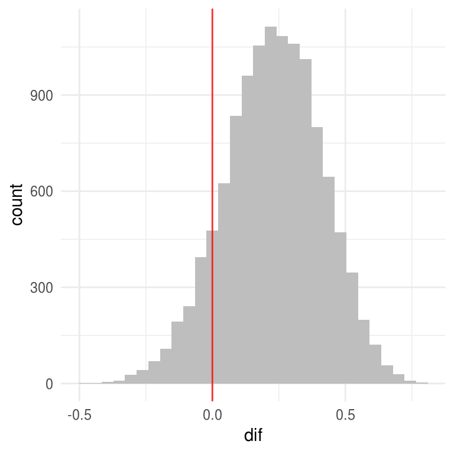
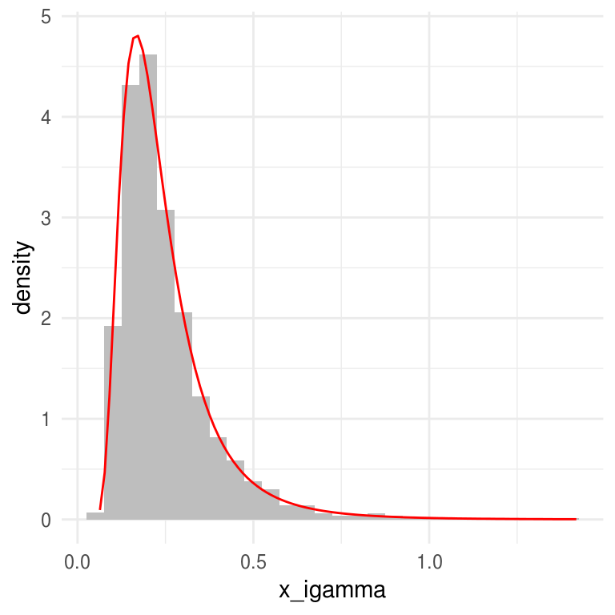
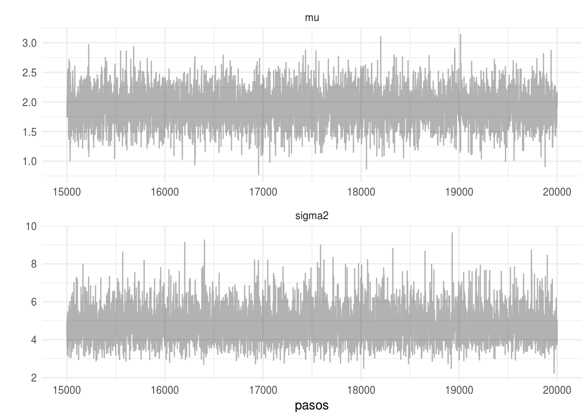
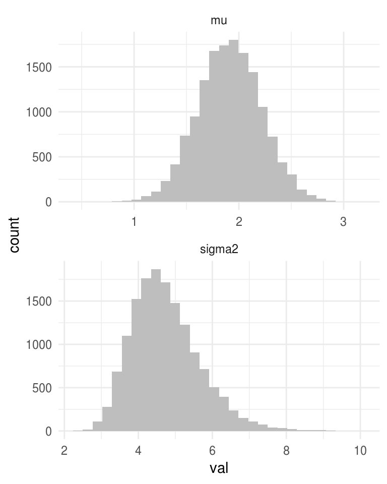
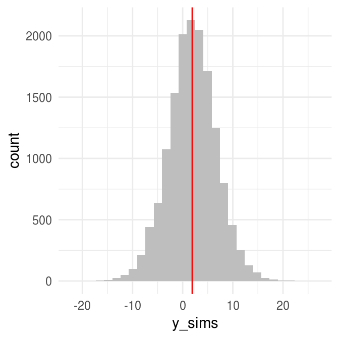

10.7 Muestreador de Gibbs
El algoritmo de Metrópolis es muy general y se puede aplicar a una gran variedad de problemas. Sin embargo, afinar los parámetros de la distribución propuesta para que el algoritmo funcione correctamente puede ser complicado. Por otra parte, el muestredor de Gibbs no necesita de una distribución propuesta.
Para implementar un muestreador de Gibbs se necesita ser capaz de generar muestras de la distribución posterior condicional a cada uno de los parámetros individuales. Esto es, el muestreador de Gibbs permite generar muestras de la posterior: \[p(\theta_1,...,\theta_p|x)\] siempre y cuando podamos generar valores de todas las distribuciones condicionales: \[p(\theta_k,|\theta_1,...,\theta_{k-1},\theta_{k+1},...,\theta_p,x)\]
El proceso del muestreador de Gibbs es una caminata aleatoria a lo largo del espacio de parámetros. La caminata inicia en un punto arbitrario y en cada tiempo el siguiente paso depende únicamente de la posición actual. Por tanto el muestredor de Gibbs es un proceso cadena de Markov vía Monte Carlo. La diferencia entre Gibbs y Metrópolis radica en como se deciden los pasos.
Muestreador Gibbs
En cada punto de la caminata se selecciona uno de los componentes del vector de parámetros (típicamente se cicla en orden):
Supongamos que se selecciona el parámetro \(\theta_k\), entonces obtenemos un nuevo valor para este parámetro generando una simulación de la distribución condicional \[p(\theta_k,|\theta_1,...,\theta_{k-1},\theta_{k+1},...,\theta_p,x)\]
El nuevo valor \(\theta_k\) junto con los valores que aun no cambian \(\theta_1,...,\theta_{k-1},\theta_{k+1},...,\theta_p\) constituyen la nueva posición en la caminata aleatoria.
Seleccionamos una nueva componente (\(\theta_{k+1}\)) y repetimos el proceso.
El muestreador de Gibbs es útil cuando no podemos determinar de manera analítica la distribución conjunta y no se puede simular directamente de ella, pero si podemos determinar todas las distribuciones condicionales y simular de ellas.
Ejemplificaremos el muestreador de Gibbs con el ejemplo de las proporciones, a pesar de no ser necesario en este caso.
Comenzamos identificando las distribuciones condicionales posteriores para cada parámetro:
\[p(\theta_1|\theta_2,x) = p(\theta_1,\theta_2|x) / p(\theta_2|x)\] \[= \frac{p(\theta_1,\theta_2|x)} {\int p(\theta_1,\theta_2|x) d\theta_1}\]
Usando iniciales \(beta(a_1, b_1)\) y \(beta(a_2,b_2)\), obtenemos:
\[p(\theta_1|\theta_2,x) = \frac{beta(\theta_1|z_1 + a_1, N_1 - z_1 + b_1) beta(\theta_2|z_2 + a_2, N_2 - z_2 + b_2)}{\int beta(\theta_1|z_1 + a_1, N_1 - z_1 + b_1) beta(\theta_2|z_2 + a_2, N_2 - z_2 + b_2) d\theta_1}\] \[= \frac{beta(\theta_1|z_1 + a_1, N_1 - z_1 + b_1) beta(\theta_2|z_2 + a_2, N_2 - z_2 + b_2)}{beta(\theta_2|z_2 + a_2, N_2 - z_2 + b_2)}\] \[=beta(\theta_1|z_1 + a_1, N_1 - z_1 + b_1)\]
Debido a que la posterior es el producto de dos distribuciones Beta independientes es claro que \(p(\theta_1|\theta_2,x)=p(\theta_1|x)\).
Una vez que determinamos las distribuciones condicionales, simplemente hay que encontrar una manera de obtener muestras de estas, en R podemos usar la función \(rbeta\).

pasos <- 12000
camino <- matrix(0, nrow = pasos, ncol = 2) # vector que guardará las simulaciones
camino[1, 1] <- 0.1 # valor inicial
camino[1, 2] <- 0.1
# Generamos la caminata aleatoria
for (j in 2:pasos){
if(j %% 2){
camino[j, 1] <- rbeta(1, z_1 + a_1, N_1 - z_1 + b_1)
camino[j, 2] <- camino[j - 1, 2]
}
else{
camino[j, 2] <- rbeta(1, z_2 + a_2, N_2 - z_2 + b_2)
camino[j, 1] <- camino[j - 1, 1]
}
}
caminata <- data.frame(pasos = 1:pasos, theta_1 = camino[, 1],
theta_2 = camino[, 2])
ggplot(caminata[1:2000, ], aes(x = theta_1, y = theta_2)) +
geom_point(size = 0.8) +
geom_path(alpha = 0.5) +
scale_x_continuous(expression(theta[1]), limits = c(0, 1)) +
scale_y_continuous(expression(theta[2]), limits = c(0, 1)) +
coord_fixed()
caminata_g <- filter(caminata, pasos %% 2 == 0) %>%
gather(parametro, val, theta_1, theta_2) %>%
mutate(pasos = rep(1:6000, 2)) %>%
arrange(pasos)
ggplot(caminata_g[1:2000, ], aes(x = pasos, y = val)) +
geom_path(alpha = 0.3) +
facet_wrap(~parametro, ncol = 1) +
scale_y_continuous("", limits = c(0, 1))
Si comparamos los resultados del muestreador de Gibbs con los de Metrópolis notamos que las estimaciones son muy cercanas
# Metropolis
caminata_m %>%
filter(pasos > 1000) %>% # eliminamos el calentamiento
group_by(parametro) %>%
summarise(
media = mean(val),
mediana = median(val),
std = sd(val)
)
#> # A tibble: 2 x 4
#> parametro media mediana std
#> <chr> <dbl> <dbl> <dbl>
#> 1 theta_1 0.614 0.620 0.127
#> 2 theta_2 0.378 0.370 0.134
# Gibbs
caminata_g %>%
filter(pasos > 1000) %>%
group_by(parametro) %>%
summarise(
media = mean(val),
mediana = median(val),
std = sd(val)
)
#> # A tibble: 2 x 4
#> parametro media mediana std
#> <chr> <dbl> <dbl> <dbl>
#> 1 theta_1 0.614 0.621 0.129
#> 2 theta_2 0.384 0.378 0.129También podemos comparar los sesgos de las dos monedas, esta es una pregunta más interesante.
caminata <- caminata %>%
mutate(dif = theta_1 - theta_2)
ggplot(caminata, aes(x = dif)) +
geom_histogram(fill = "gray") +
geom_vline(xintercept = 0, alpha = 0.8, color = "red")
#> `stat_bin()` using `bins = 30`. Pick better value with `binwidth`.
La principal ventaja del muestreador de Gibbs sobre el algoritmo de Metrópolis es que no hay necesidad de seleccionar una distribución propuesta y no hay que lidiar con lo ineficiente de rechazar valores. A cambio, debemos ser capaces de derivar las probabilidades condicionales de cada parámetro y de generar muestras de estas.
Ejemplo: Normal
Retomemos el caso de observaciones normales, supongamos que tengo una muestra \(x_1,...,x_N\) de observaciones independientes e identicamente distribuidas, con \(x_i \sim N(\mu, \sigma^2)\), veremos el caso de media desconocida, varianza desconocida y de ambas desconocidas.
Normal con media desconocida. Supongamos que \(\sigma^2\) es conocida, por lo que nuestro parámetro de interés es únicamente \(\mu\) entonces si describo mi conocimiento inicial de \(\mu\) a través de una distribución normal: \[\mu \sim N(m, \tau^2)\] resulta en una distribución posterior: \[\mu|x \sim N\bigg(\frac{\sigma^2}{\sigma^2 + N\tau^2}m + \frac{N\tau^2}{\sigma^2 + N \tau^2}\bar{x}, \frac{\sigma^2 \tau^2}{\sigma^2 + N\tau^2}\bigg)\]
Normal con varianza desconocida. Supongamos que \(\mu\) es conocida, por lo que nuestro parámetro de interés es únicamente \(\sigma^2\). En este caso una distribución conveniente para describir nuestro conocimiento inicial es la distribución Gamma Inversa.
La distribución Gamma Inversa es una distribución continua con dos parámetros y que toma valores en los positivos. Como su nombre lo indica, esta distribución corresponde al recírpoco de una variable cuya distribución es Gamma, recordemos que si \(x\sim Gamma(\alpha, \beta)\) entonces:
\[p(x)=\frac{1}{\beta^{\alpha}\Gamma(\alpha)}x^{\alpha-1}e^{-x/\beta}\]
donde \(x>0\). Ahora si \(y\) es la variable aleatoria recírpoco de \(x\) entonces:
\[p(y)=\frac{\beta^\alpha}{\Gamma(\alpha)}y^{-\alpha - 1} exp{-\beta/y}\]
con media \[\frac{\beta}{\alpha-1}\] y varianza \[\frac{\beta^2}{(\alpha-1)^2(\alpha-2)}.\]
Debido a la relación entre las distribuciones Gamma y Gamma Inversa, podemos utilizar la función rgamma de R para generar valores con distribución gamma inversa.
# 1. simulamos valores porvenientes de una distribución gamma
x_gamma <- rgamma(2000, shape = 5, rate = 1)
# 2. invertimos los valores simulados
x_igamma <- 1 / x_gamma
# También podemos usar las funciones de MCMCpack
library(MCMCpack)
x_igamma <- data.frame(x_igamma)
ggplot(x_igamma, aes(x = x_igamma)) +
geom_histogram(aes(y = ..density..), binwidth = 0.05, fill = "gray") +
stat_function(fun = dinvgamma, args = list(shape = 5, scale = 1),
color = "red") 
Volviendo al problema de inferir acerca del parámetros \(\sigma^2\), si resumimos nuestro conocimiento inicial a través de una distribución Gamma Inversa tenemos \[p(\sigma^2)=\frac{\beta^\alpha}{\Gamma(\alpha)}\frac{1}{(\sigma^2)^{\alpha + 1}} e^{-\beta/\sigma^2}\]
la verosimiltud: \[p(x|\mu, \sigma^2)=\frac{1}{(2\pi\sigma^2)^{N/2}}exp\left(-\frac{1}{2\sigma^2}\sum_{j=1}^{N}(x_j-\mu)^2\right)\]
y calculamos la posterior:
\[p(\sigma^2) \propto p(x|\mu,\sigma^2)p(\sigma^2)\]
obtenemos que \(\sigma^2|x \sim GI(N/2+\alpha, \beta + 1/2 \sum(x_i - \mu)^2)\).
Por tanto tenemos que la inicial Gamma con verosimilitud Normal es una familia conjugada.
Ejemplo: Normal con media y varianza desconocidas
Sea \(\theta=(\mu, \sigma^2)\) especificamos la siguiente inicial para \(\theta\): \[p(\theta) = N(\mu|m, \tau^2)\cdot IG(\sigma^2|\alpha, \beta)\] suponemos hiperparámetros \(m,\tau^2, \alpha, \beta\) conocidos. Entonces, la distribución posterior es: \[ p(\theta|x) \propto p(x|\theta) p(\theta)\] \[= \frac{1}{(\sigma^2)^{N/2}} exp\bigg(-\frac{1}{2\sigma^2}\sum_{i=1}^N (x_i-\mu)^2 \bigg) exp\bigg(-\frac{1}{2\tau^2}(\mu-m)^2)\bigg) \frac{1}{(\sigma^2)^{\alpha +1}} exp\bigg(-\frac{\beta}{\sigma^2}\bigg)\]
en esta última distribución no reconocemos el núcleo de niguna distribución conocida (existe una distribución normal-gamma inversa) pero si nos concenteramos únicamente en los términos que involucran a \(\mu\) tenemos:
\[exp\left(-\frac{1}{2}\left( \mu^2 \left( \frac{N}{\sigma^2} + \frac{1}{\tau^2} \right) - 2\mu\left(\frac{\sum_{i= 1}^n x_i}{\sigma^2} + \frac{m}{\tau^2}\right) \right)\right)\]
esta expresión depende de \(\mu\) y \(\sigma^2\), sin embargo condicional a \(\sigma^2\) observamos el núcleo de una distribución normal,
\[\mu|\sigma^2,x \sim N\left(\frac{n\tau^2}{n\tau^2 + \sigma^2}\bar{x} + \frac{\sigma^2}{N\tau^2 + \sigma^2}m, \frac{\tau^2\sigma^2}{n\tau^2 + \sigma^2} \right)\] Si nos fijamos únicamente en los tárminos que involucran a \(\sigma^2\) tenemos:
\[\frac{1}{(\sigma^2)^{N/2+\alpha+1}}exp\left(- \frac{1}{\sigma^2} \left(\sum_{i=1}^N \frac{(x_i-\mu)^2}{2} + \beta \right) \right)\]
y tenemos
\[\sigma^2|\mu,x \sim GI\left(\frac{N}{2} + \alpha, \sum_{i=1}^n \frac{(x_i-\mu)^2}{2} + \beta \right)\] Obtenemos así las densidades condicionales completas \(p(\mu|\sigma^2, x)\) y \(p(\sigma^2|\mu, x)\) cuyas distribuciones conocemos y de las cuales podemos simular.
Implementaremos un muestreador de Gibbs.
Comenzamos definiendo las distrbuciones iniciales:
\(\mu \sim N(1.5, 16)\), esto es \(m = 1.5\) y \(\tau^2 = 16\).
\(\sigma^2 \sim GI(3, 3)\), esto es \(\alpha = \beta = 3\).
Ahora supongamos que observamos 20 realizaciones provenientes de la distribución de interés:
N <- 50 # Observamos 20 realizaciones
set.seed(122)
x <- rnorm(N, 2, 2)
x
#> [1] 4.6214 0.2483 2.3990 2.9319 -1.6041 4.8975 2.5977 2.7236
#> [9] -0.0139 1.4860 1.7357 0.3167 2.5485 -2.9252 -2.3068 4.3184
#> [17] 3.3795 3.7605 0.1133 3.4381 0.9243 0.9547 -0.1058 2.2030
#> [25] 5.7270 1.9608 -0.1566 2.3452 3.0661 5.9045 4.8227 3.2027
#> [33] 0.1720 5.1609 1.0602 5.2037 2.7455 2.0678 2.2082 -2.0367
#> [41] 0.6840 -1.2170 -0.6882 1.6067 4.7513 2.3466 1.1214 -1.1906
#> [49] 0.5114 5.6304Escribimos el muestreador de Gibbs.
m <- 1.5; tau2 <- 16; alpha <- 3; beta <- 3 # parámetros de iniciales
pasos <- 20000
camino <- matrix(0, nrow = pasos + 1, ncol = 2) # vector guardará las simulaciones
camino[1, 1] <- 0 # valor inicial media
# Generamos la caminata aleatoria
for (j in 2:(pasos + 1)){
# sigma^2
mu <- camino[j - 1, 1]
a <- N / 2 + alpha
b <- sum((x - mu) ^ 2) / 2 + beta
camino[j - 1, 2] <- 1/rgamma(1, shape = a, rate = b) # Actualizar sigma2
# mu
sigma2 <- camino[j - 1, 2]
media <- (N * tau2 * mean(x) + sigma2 * m) / (N * tau2 + sigma2)
var <- sigma2 * tau2 / (N * tau2 + sigma2)
camino[j, 1] <- rnorm(1, media, sd = sqrt(var)) # actualizar mu
}
caminata <- data.frame(pasos = 1:pasos, mu = camino[1:pasos, 1],
sigma2 = camino[1:pasos, 2])
caminata_g <- caminata %>%
gather(parametro, val, mu, sigma2) %>%
arrange(pasos)
ggplot(filter(caminata_g, pasos > 15000), aes(x = pasos, y = val)) +
geom_path(alpha = 0.3) +
facet_wrap(~parametro, ncol = 1, scales = "free") +
scale_y_continuous("")
ggplot(filter(caminata_g, pasos > 5000), aes(x = val)) +
geom_histogram(fill = "gray") +
facet_wrap(~parametro, ncol = 1, scales = "free")
#> `stat_bin()` using `bins = 30`. Pick better value with `binwidth`.
Algunos resúmenes de la posterior:
caminata_g %>%
filter(pasos > 1000) %>% # eliminamos la etapa de calentamiento
group_by(parametro) %>%
summarise(
mean(val),
sd(val),
median(val)
)
#> # A tibble: 2 x 4
#> parametro `mean(val)` `sd(val)` `median(val)`
#> <chr> <dbl> <dbl> <dbl>
#> 1 mu 1.91 0.305 1.91
#> 2 sigma2 4.74 0.933 4.62Predicción. Para predecir el valor de una realización futura \(y\) recordemos que:
\[p(y) =\int p(y|\theta)p(\theta|x)d\theta\]
Por tanto podemos aproximar la distribución predictiva posterior como:
caminata_f <- filter(caminata, pasos > 5000)
caminata_f$y_sims <- rnorm(1:nrow(caminata_f), caminata_f$mu, caminata_f$sigma2)
ggplot(caminata_f, aes(x = y_sims)) +
geom_histogram(fill = "gray") +
geom_vline(aes(xintercept = mean(y_sims)), color = "red")
#> `stat_bin()` using `bins = 30`. Pick better value with `binwidth`.
 ¿Cuál es la probabilidad de que una
observación futura sea mayor a 8?
¿Cuál es la probabilidad de que una
observación futura sea mayor a 8?
En estadística bayesiana es común parametrizar la distribución Normal en términos de precisión (el inverso de la varianza). Si parametrizamos de esta manera \(\nu = 1/\sigma^2\) podemos repetir el proceso anterior con la diferencia de utilizar la distribución Gamma en lugar de Gamma inversa.
Conclusiones y observaciones Metrópolis y Gibbs
Una generalización del algoritmo de Metrópolis es Metrópolis-Hastings.
El algoritmo de Metropolis es como sigue:- Generamos un punto inicial tal que \(p(\theta)>0\).
- Para \(t = 1,2,...\)
- Se propone un nuevo valor \(\theta_{propuesto}\) con una distribución propuesta \(g(\theta_{propuesta}|\theta_{actual})\) es común que \(g(\theta_{propuesta}|\theta_{actual})\) sea una normal centrada en \(\theta_{actual}\).
- Calculamos \[p_{mover}=min\bigg( \frac{p(\theta_{propuesta})}{p(\theta_{actual})},1\bigg)\] y aceptamos \[\theta_{propuesta}\] con probabilidad \(p_{mover}\). Es así que el algorito requiere que podamos calcular el cociente en \(p_{mover}\) para todo \(\theta_{actual}\) y \(\theta_{propuesta}\), así como simular de la distribución propuesta \(g(\theta_{propuesta}|\theta_{actual})\), adicionalmente debemos poder generar valores uniformes para decidir si aceptar/rechazar. En el caso de Metropolis un requerimiento adicional es que la distribución propuesta \(g(\theta_{a}|\theta_b)\) debe ser simétrica, es decir \(g(\theta_{a}|\theta_b) = g(\theta_{b}|\theta_a)\) para todo \(\theta_{a}\), \(\theta_{b}\).
Metropolis-Hastings generaliza Metropolis, eliminando la restricción de simetría en la distribución propuesta \(g(\theta_{a}|\theta_b)\), sin embargo para corregir por esta asimetría debemos calcular \(p_{mover}\) como sigue: \[p_{mover}=min\bigg( \frac{p(\theta_{propuesta})/g(\theta_{propuesta}|\theta_{actual})}{p(\theta_{actual})/g(\theta_{actual}|\theta_{propuesta})},1\bigg)\] La generalización de Metrópolis-Hastings puede resultar en algoritmos más veloces.
Se puede ver Gibbs como una generalización de Metropolis, cuando estamos actualizando un componente de los parámetros, la distribución propuesta es la distribución posterior para ese parámetro, por tanto siempre es aceptado.
En el caso de modelos complicados se utilizan combinaciones de Gibbs y Metropolis. Cuando se consideran estos dos algoritmos Gibbs es un método más simple y es la primera opción para modelos condicionalmente conjugados. Sí solo podemos simular de un subconjunto de las distribuciones condicionales posteriores, entonces podemos usar Gibbs siempre que se pueda y Metropolis unidimensional para el resto, o de manera más general separamos en bloques, un bloque se actualiza con Gibbs y otro con Metrópolis.
El algoritmo de Gibbs puede atorarse cuando hay correlación alta entre los parámetros, reparametrizar puede ayudar, o se pueden usar otros algoritmos que veremos más adelante.